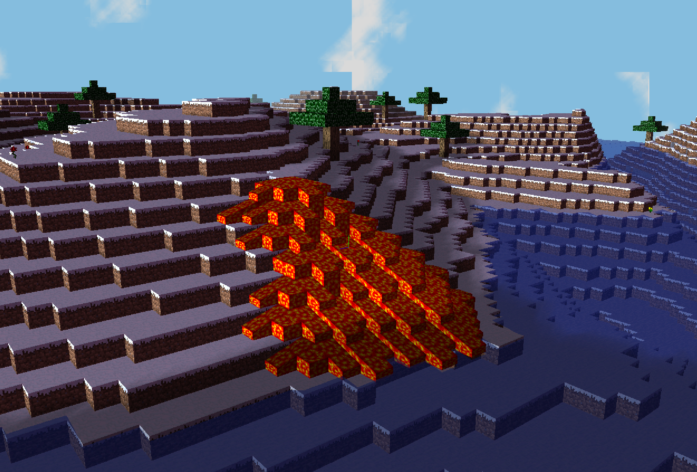
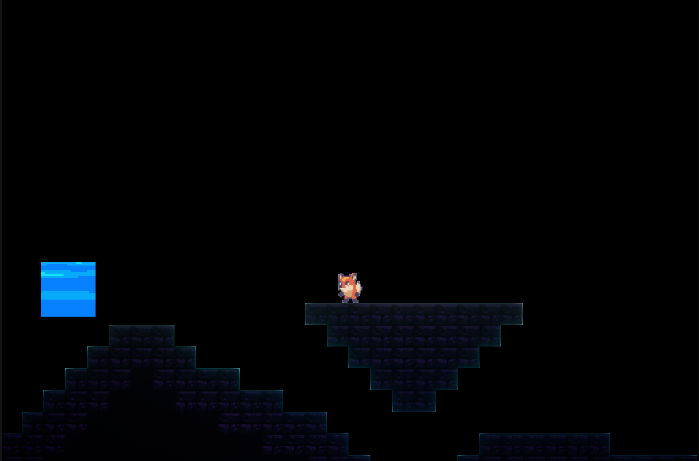

Projects
Mini Minecraft
This group project utilizes c++ and glsl to achieve the simple version of the game MineCraft. This mini minecraft supports simple fluid simulation, skybox, water waves, and basic physical movement.

Real Time Grass
This single project utilizes c++ and glsl to achieve real time grass rendering. It utilizes tessellation in glsl and beizer curve to generate single grass. It also supports the wind force, gravity force and recovery force on each single grass. Reference paper link Responsive Real-Time Grass Rendering for General 3D Scene

Shadow Game
This group project utilizes c++ and unreal engine 5 to achieve shadow game. Shadow is a 2D side-view Metroidvania and puzzle game set in a world where shadows illuminate the world instead of light. Players embark on a quest to uncover the deepest secrets of the world of darkness, explore a well crafted map, solve puzzles, fight bosses, and collect items to enhance abilities, wrapped in a nostalgic retrospective 16-bit SNES art style. The game targets Metroidvania enthusiasts of all ages, offering a unique adventure experience. Key features include a Metroidvania-style map, a novel lighting mechanism where shadows spread instead of light, and various shadow types with different interaction with the environment.
